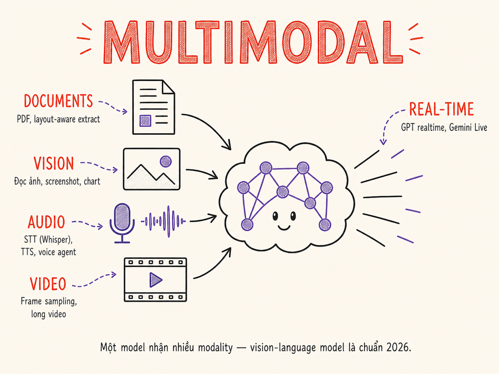

Multimodal Applications
Text, image, audio, video — khi AI xử lý nhiều loại input cùng lúc, mọi thứ trở nên mạnh hơn và phức tạp hơn. Đây là map đầy đủ của multimodal landscape.

17.1 Multimodal là gì
Multimodal AI xử lý và/hoặc generate nhiều loại data (modalities) khác nhau. Có hai kiến trúc chính:
Single-model multi-input
Một model duy nhất nhận nhiều loại input. Ví dụ: GPT-4o nhận text + image + audio trong cùng một request. Ưu điểm: cross-modal reasoning tốt hơn, latency thấp hơn. Nhược điểm: model lớn hơn, cost cao hơn.
Pipeline của specialized models
Mỗi modality có model riêng: Whisper (audio → text) → GPT-4o (text → text) → ElevenLabs (text → audio). Ưu điểm: mỗi component tốt nhất trong class, dễ swap. Nhược điểm: latency cao hơn do chaining, error propagation.
17.2 Vision: image understanding
Vision capability cho phép model "nhìn" và hiểu nội dung visual. Các use case cốt lõi:
Image understanding & description
Model nhận image (base64 hoặc URL) cùng với text prompt. Capability bao gồm: mô tả nội dung, trả lời câu hỏi về ảnh, phân tích composition, nhận diện objects/text/scenes.
OCR trong ảnh
Vision models đọc text trong ảnh tốt hơn traditional OCR trong nhiều trường hợp — đặc biệt với handwriting, stylized fonts, và text trong context. Tuy nhiên, với structured document extraction (table, form), specialized model như Azure Document Intelligence hoặc AWS Textract thường cho output có cấu trúc hơn.
Charts & graphs
Claude và GPT-4o có thể đọc bar chart, line chart, pie chart và extract values hoặc trends. Hữu ích cho "chat with your dashboard" use cases. Lưu ý: accuracy không bằng bảng số liệu raw — nên supplement với data source khi có thể.
Screenshots & UI analysis
Dùng vision để analyze screenshot của app, website, hoặc error message. Cursor và Claude Code dùng pattern này để hiểu UI context khi help debug frontend issues.
| Model | Vision strengths | Image input | Cost/image (~1024px) |
|---|---|---|---|
| Claude 3.5 Sonnet | Document analysis, OCR, detailed description, code in screenshots | Base64 hoặc URL, multiple images | ~$0.004–0.008 |
| GPT-4o | General vision, charts, real-world scenes, multi-image reasoning | Base64, URL, multiple images | ~$0.003–0.01 |
| Gemini 1.5 Pro | Long document (1000+ pages as images), video frames, interleaved | Up to 3600 images per request | ~$0.002–0.005 |
| Qwen-VL | Open-source, strong on Chinese text OCR, competitive general vision | Base64, local deploy | Self-hosted cost only |
| LLaVA / InternVL | Open-source, self-hostable, privacy-sensitive use cases | Local only | GPU cost only |
Vision prompt examples
# Analyze a chart image
prompt = """Analyze this chart image and:
1. Identify the chart type and axes
2. Extract all data points/values shown
3. Describe the main trend or insight
4. Note any anomalies or notable data points
Return as JSON: {type, x_axis, y_axis, data_points: [], insight, anomalies: []}"""
# Extract data from a screenshot
prompt = """This is a screenshot of a form/interface.
Extract all visible field labels and their values.
Return as a flat JSON object with field_name: value pairs."""
# Multi-image comparison
prompt = """Compare these two product screenshots [image1] [image2].
List: UI differences, feature differences, design changes.
Format as a side-by-side comparison table."""17.3 Document AI: layout understanding
Document AI là specialized subset của vision — tập trung vào documents (contracts, invoices, reports, forms) với mục tiêu extract structured information.
So sánh với traditional OCR pipeline
| Approach | Pipeline | Ưu điểm | Nhược điểm |
|---|---|---|---|
| Traditional OCR | Preprocess → Tesseract/cloud OCR → regex/template matching → structure | Fast, cheap, deterministic, works offline | Fragile với layout variation, template per document type, kém với handwriting |
| Specialized Document AI | Azure DI / AWS Textract → structured JSON with bounding boxes, tables, key-value pairs | Layout-aware, table extraction native, pre-trained on forms | Cost, cloud dependency, cần config per doc type |
| Vision LLM | Image → Claude/GPT-4o vision → extraction prompt → structured output | Flexible, handles novel layouts, zero-shot, understands context | Cost cao, latency cao, less deterministic for structured extraction |
Production pattern phổ biến: Azure Document Intelligence hoặc AWS Textract để extract raw structure → LLM để validate, normalize, và reason về extracted data.
17.4 Audio: STT, TTS, và Voice agents
Speech-to-Text (STT)
STT chuyển audio thành transcript text. Các options:
- Whisper (OpenAI): open-source, self-hostable, rất tốt cho nhiều ngôn ngữ. Batch processing, không phải realtime. Faster-whisper cho throughput tốt hơn.
- Deepgram: API, realtime streaming, thấp latency, tốt cho live transcription. Nova-2 model rất competitive. Hỗ trợ tiếng Việt.
- AssemblyAI: API với additional AI features (speaker diarisation, sentiment, chapter detection).
- GPT-4o audio / Gemini Live: native audio input, không cần separate STT — model hiểu speech trực tiếp.
Text-to-Speech (TTS)
- ElevenLabs: chất lượng cao nhất cho voice cloning và natural prosody. Latency ~300ms với streaming.
- OpenAI TTS: tốt, nhanh, 6 voices, cost hợp lý. Streaming support.
- Google Cloud TTS: nhiều voices, WaveNet/Neural2 quality, multilingual tốt.
- Kokoro (open-source): self-hostable, quality gần với commercial.
Realtime voice agents
Voice agents thực sự (không phải STT → LLM → TTS waterfall) cần native audio-in/audio-out models với ultra-low latency:
GPT-4o Realtime API và Gemini Live hợp nhất STT + LLM + TTS vào một model — output streaming audio trực tiếp, interruption handling native. Total latency có thể dưới 500ms — đủ cho natural conversation.
Speaker diarisation
Meeting transcription cần biết ai nói gì. AssemblyAI, Pyannote (open-source), và Deepgram Nova-2 hỗ trợ diarisation — label từng segment với speaker ID (SPEAKER_1, SPEAKER_2). Kết hợp với LLM để assign tên thực từ context ("hello, I'm John...").
17.5 Video understanding
Video là sequence of frames + audio track. Approach phổ biến:
Frame sampling
Extract N frames từ video (uniform sampling hoặc keyframe detection), gửi kèm với prompt. GPT-4o nhận nhiều images, Gemini 1.5 Pro nhận up to 1 hour video (native). Hữu ích cho: video summarization, instruction extraction từ tutorial, content moderation.
Gemini long video
Gemini 1.5 Pro xử lý up to 1 giờ video native (nạp thẳng file hoặc YouTube URL). Model thấy temporal relationships, không chỉ isolated frames. Phù hợp cho: analyze meeting recordings, Q&A về video content, generate transcript với timestamps.
Video generation (ngoài scope)
Sora (OpenAI), Veo (Google), Kling, Runway là các model generate video từ text/image. Đây là generative AI area phát triển nhanh nhưng ngoài scope của AI Engineering tập trung vào applications — chủ yếu vì API stability và production readiness còn hạn chế.
17.6 Cross-modal patterns
Cross-modal là khi output của một modality trở thành input của modality khác trong một pipeline. Các pattern phổ biến:
| Pattern | Flow | Use case |
|---|---|---|
| Image → text → action | Screenshot → extract UI state → LLM decide next action → execute | UI automation, visual testing, RPA |
| Voice → text → response → voice | Mic → STT → LLM → TTS → Speaker | Voice assistant, call center AI |
| Document → chunks → QA | PDF (image) → vision OCR → text chunks → embed → RAG | Document Q&A with scanned PDFs |
| Video → transcript → insight | MP4 → Whisper → transcript → LLM summarize/analyze | Meeting notes, lecture summary |
| Text → image → verify | LLM generate description → DALL-E generate image → vision model verify accuracy | Content generation with visual QA |
Error propagation trong pipeline
Với multi-step cross-modal pipeline, lỗi ở step đầu lan theo. STT transcribe sai một term kỹ thuật → LLM nhận input sai → response sai → TTS đọc response sai. Cần:
- Validate output tại mỗi bước có thể (confidence score, schema validation)
- Log intermediate steps cho debugging
- Handle modality-specific failure gracefully (STT fail → fallback to text input)
17.7 Cost considerations
Multimodal input đắt hơn text đáng kể. Quan trọng phải budget đúng:
| Modality | Pricing model | Ví dụ cost | Optimization |
|---|---|---|---|
| Image (vision) | Tính theo "image tokens" (tile-based) | ~$0.003–0.01 per 1024×1024 image | Resize xuống trước khi gửi; dùng "low detail" mode nếu không cần fine detail |
| Audio (STT) | Per minute của audio | ~$0.006/min (Whisper), $0.0059/min (Deepgram) | Trim silence, downsample to 16kHz mono; batch nhiều short clips |
| Audio (TTS) | Per character hoặc per word | ~$0.015/1000 chars (OpenAI), ~$0.10/1000 chars (ElevenLabs) | Cache common responses; chỉ TTS final response, không stream intermediate |
| Video | Per second hoặc per frame | ~$0.002/sec (Gemini video) | Sample key frames thay vì full video; limit video length |
Claude và GPT-4o tính image tokens theo "tiles" (512×512 tiles). Một ảnh 1024×1024 = 4 tiles = ~1000 tokens overhead. Một ảnh 2048×2048 không resize = 16 tiles ≈ 4000 tokens. Với volume cao, resize images về 1024px trước khi gửi có thể giảm cost 50-75%.
17.8 Latency considerations
Mỗi modality có latency profile khác nhau. Voice là khắt khe nhất:
| Modality | Latency SLA điển hình | Latency bottleneck | Technique |
|---|---|---|---|
| Text (chat) | TTFT < 3s | LLM prefill time | Streaming, caching |
| Image (vision) | < 5s total | Image upload + prefill với image tokens | Resize trước, compress, CDN URLs thay vì base64 |
| Voice (non-realtime) | < 3s end-to-end | STT latency + LLM TTFT + TTS start | Streaming TTS song song với LLM generation |
| Voice (realtime) | < 500ms end-to-end | Network RTT + model decode | Native audio model (GPT-4o Realtime), edge deployment |
| Video analysis | < 30s (non-realtime OK) | Video upload + processing | Pre-process offline, cache analysis results |
> 500ms end-to-end latency cho voice agent nghe rất awkward với humans. > 1s là unacceptable. Pipeline STT → LLM → TTS waterfall thường không thể đạt dưới 500ms — cần native audio-in/audio-out model như GPT-4o Realtime hoặc Gemini Live.
17.9 Common use cases
Visual search
User upload ảnh (sản phẩm, phong cảnh, text trong ảnh) → vision model extract features/text → search trong catalog hoặc knowledge base. Ví dụ: "Tôi thấy chai này ở store, giá bao nhiêu?" (ảnh → sản phẩm matching). Cần kết hợp vision embedding + text search.
Document Q&A với scanned PDFs
Scanned PDF không có text layer — chỉ có images. Pipeline: PDF → extract page images → vision model hoặc OCR engine → text → chunk → embed → RAG. Với LlamaParse hoặc Azure Document Intelligence, có thể giữ được table structure và layout.
Voice assistant
Smart speaker, customer service bot, accessibility tool cho người khiếm thị. Core pattern: always-on VAD (Voice Activity Detection) → STT on speech detect → LLM → TTS → speaker. Cần handle background noise, speaker diarisation nếu multi-user.
Accessibility
Vision AI có thể mô tả ảnh cho người khiếm thị. TTS convert text content thành audio. STT cho phép voice input thay keyboard. Đây là ứng dụng AI có impact xã hội rõ nhất và không cần justify bằng ROI.
Meeting intelligence
Record meeting → Whisper/Deepgram STT + diarisation → LLM summarize → action items extraction → Slack/email notification. Tools như Otter.ai, Fireflies, và Grain làm đúng pipeline này. Dùng LLM để extract "decisions made", "action items", "open questions" là differentiated value so với raw transcript.
Tóm tắt
- Hai kiến trúc chính: single-model multi-input (cross-modal reasoning tốt hơn) vs pipeline của specialized models (modular, dễ swap). Production thường là hybrid.
- Vision: GPT-4o và Claude 3.5 Sonnet mạnh ngang nhau cho document/UI analysis. Gemini 1.5 Pro cho volume lớn (1000+ pages). Resize ảnh trước khi gửi để giảm cost.
- Document AI: Azure DI/Textract cho structured extraction, vision LLM cho flexible/novel layouts. Combine cả hai trong production.
- Audio: Whisper cho batch STT (tốt, free), Deepgram cho realtime streaming, ElevenLabs cho chất lượng TTS cao nhất. GPT-4o Realtime cho native audio-in/audio-out.
- Voice agent realtime cần < 500ms — chỉ đạt được với native audio model, không phải waterfall STT→LLM→TTS.
- Cost: image tokens đắt hơn text tokens đáng kể. Audio per-minute tích lũy nhanh. Luôn resize và compress trước khi gửi.
- Error propagation trong cross-modal pipeline: validate output tại mỗi bước, log intermediates, handle per-modality failure gracefully.